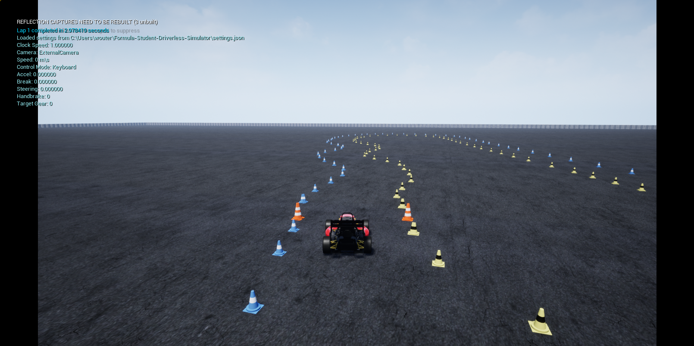

Custom Mapping
Making custom maps
You can make your own custom map by using the following format below or by using the random track generator from @mvanlobensels that now has the posibility to export maps for FSDS
Loading custom maps
From the GUI
Open the simulator and in the "Level" drop down select "CustomMap". Paste the absolute path to your map in the text field that showed up and run the simulator.

To load a new map, restart the simulator and give it a new absolute path to the new map.
From command line
When launching the simulator executable, add the absolute path to the map as a command line argument:
"$UE4_PROJECT_ROOT/FSOnline/Binaries/Linux/Blocks" FSOnline -CustomMapPath="<path to the custom map here>"
The simulator will launch directly into the custom map, skipping the menu entirely.
Custom map file format
The maps need to be made in a specific format. We chose to use csv files. The format within the csv files will have to look as follows:
tag,x,y,direction,x_variance,y_variance,xy_covariance
for now the x_variance, y_variance and xy_covariance are not used and can be 0.
Possible tags are: - blue - yellow - big_orange
As an example, your file could look something like this:
blue,47.96037109,83.400,0.0,0.01,0.01,0.0
yellow,67.96037109,83.400,0.0,0.01,0.01,0.0
big_orange,20.9,-13.8,0.0,0.01,0.01,0.0
big_orange,16.4,-21.6,0.0,0.01,0.01,0.0
big_orange,20.0,-13.3,0.0,0.01,0.01,0.0
big_orange,15.5,-21.1,0.0,0.01,0.01,0.0
blue,1.0,0.0,0.0,0.01,0.01,0.0
yellow,2.0,0.0,0.0,0.01,0.01,0.0
blue,3.0,0.0,0.0,0.01,0.01,0.0
yellow,4.0,0.0,0.0,0.01,0.01,0.0
blue,5.0,0.0,0.0,0.01,0.01,0.0
yellow,6.0,0.0,0.0,0.01,0.01,0.0
It is important to either have 4 or 2 big orange cones to make sure that we can calculate how the start finish line should be oriented.
Share it with the community
You are welcome to share your maps with the community by adding them to the maps folder and creating a pull request.